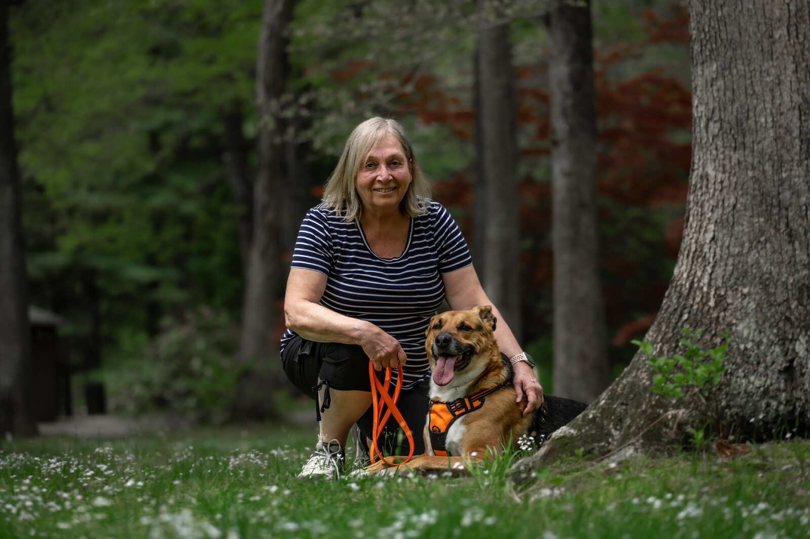
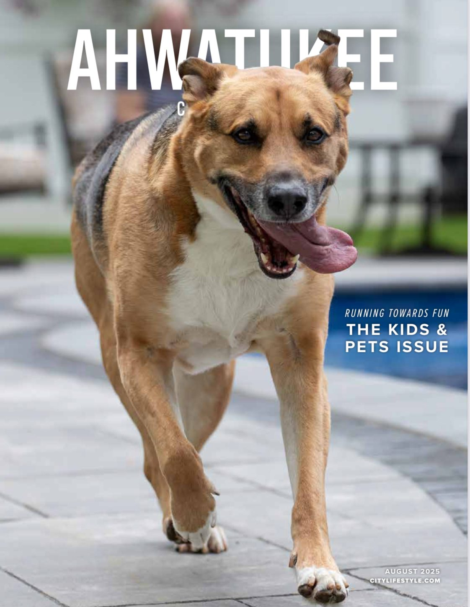

The heart behind the stories, the dog beside them, and the quiet path that turned storytime into a world of books, comfort, and kindness

Storyteller, artist, and heart guide
I'm Susan Higgins, a storyteller, artist, and heart guide who believes in the power of kindness, imagination, and inner light. For as long as I can remember, I have been drawn to the places where healing and story meet, where a simple image, a gentle truth, or a well-told tale can help someone feel less alone. The natural world has always spoken to me in that way. So has the quiet courage it takes to keep choosing love, even after life has asked a lot of your heart.
When I began sharing stories with Norbert beside me, something unexpected happened. People did not just watch, they connected. They felt the gentleness, the comfort, and the deeper meaning inside the stories. What started as simple storytime moments became a doorway into something larger, a book, a growing enchanted forest world, and a creative path that now reaches children and grown-ups alike.
One of the clearest turning points was The Tug of War Lesson. After viewers heard that story, they immediately began asking where they could buy the book. That response showed me the stories were landing in a real and meaningful way. It helped me trust that this work belonged not only in videos, but on the page and in the hands of readers.
Everything I create comes from that same place. I want these stories to offer comfort, courage, connection, and a softer place to land. Whether I am writing a children's book, reading aloud with Norbert, or building the enchanted forest one story at a time, the hope is always the same, to help people remember the light within themselves.
The heart of this world
Norbert Barkah is the heart of this world. He is a gentle, wise, deeply feeling dog whose presence changes the space around him. With his expressive eyes, soft spirit, and torn ear that seems to carry its own bit of earned wisdom, he has a way of making people feel safe before a single word is spoken. He is not performing. He is simply being who he is, and that honesty is part of why people love him.
What makes Norbert so special is not only how he looks, but how he listens. He sits beside the stories as if he knows they matter. He brings warmth, steadiness, and a quiet kind of magic to everything we share. For many people, Norbert is the doorway into the enchanted forest. He is the faithful companion who makes the stories feel real, lived, and full of heart.
These stories matter because people are hungry for gentleness that does not talk down to them. Children feel more than we often give them credit for, and grown-ups do too. A story can help us hold fear, grief, tenderness, and hope in a way that feels safe. It can show us courage without hardness, kindness without weakness, and healing without pressure. That is what I hope these stories offer.
At their core, these stories are about remembering. Remembering that kindness matters. Remembering that imagination can heal. Remembering that even in uncertain times, there is still inner light to guide us forward. Through Norbert, the enchanted forest, and the stories themselves, I want to give people something steady they can return to, something that helps them breathe, feel, and believe in goodness again.
Explore the Books
Ahwatukee City Lifestyle · August 2025
Norbert was featured on the cover of the Kids and Pets edition of Ahwatukee City Lifestyle magazine. The article tells the story of how morning pep talks with Norbert grew into storytime videos, a published children's book, and a community of over 56,000 followers united by kindness.
Read the Article